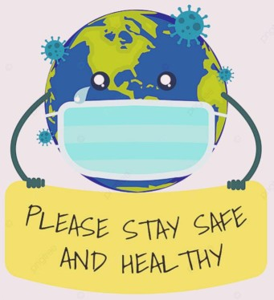

EMERGENCE OF COVID IN MAHARASHTRA
The first case of the COVID-19 pandemic in the Indian state of Maharashtra was confirmed on 9 March 2020.
The largest single day spike 68,631 cases highest peak in all of India was reported on 18 April 2021
Maharashtra is a hotspot that accounts for nearly 22.35 % of the total cases in India as well as about 30.55 % of all deaths.The state's case fatality rate is nearly 1.49%. Pune is the worst-affected city in Maharashtra. About half of the cases in the state emerged from the Mumbai Metropolitan Region (MMR)
Hotspots and Containment zones
Several places in the state, where multiple confirmed cases were reported, were sealed off to prevent community spread. These areas included Islampur in Sangli, Worli Kolivada in Mumbai, Peth area and parts of Kondhwa in Pune. BMC identified 381 containment zones within the city; several parts of the city including Dharavi were sealed off as the number of confirmed cases rose sharply in April.
The central government classified the country's districts into zones based on the extent of the spread of virus, with 14 districts in Maharashtra being identified as hotspots and labelled as red zones.
VACCINATION INFO
18+ POPULATION:
In Maharashtra, 8,33,85,586 citizens have been vaccinated with Dose 1 vaccination and 6,25,52,882 have been vaccinated with Dose 2 vaccination.
15-18 POPULATION:
In Maharashtra, 33,54,970 chidren have been vaccinated with Dose 1 vaccination and 4,97,817chidren have been vaccinated with Dose 2 vaccination.
PRECAUTION DOSES:
In Maharashtra, 11,95,534 citizens have been vaccinated with Precaution Dose